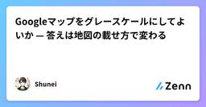
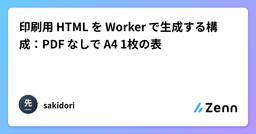
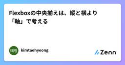
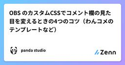
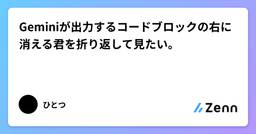
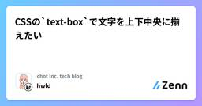
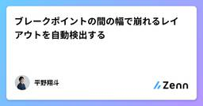
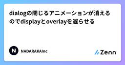
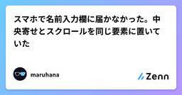
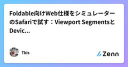

Zennの「CSS」のフィード
フィード
【石巻ハッカソン2026 IT Boot Camp部門】AIでプログラミング体験！
Zennの「CSS」のフィード
石巻ハッカソン2026 IT Boot Camp部門で使用する教材です。この教材を通してAIを活用してプログラミングを体験してみましょう！
1日前

Googleマップをグレースケールにしてよいか — 答えは地図の載せ方で変わる
Zennの「CSS」のフィード
地図をセクションの背景に敷き、サイトの配色に合わせてグレースケールにし、上から暗い幕をかけ、下端に住所や営業時間のパネルを重ねる構成の店舗サイトがあります。この構成をとっている実在のサイトを1件調べたところ（2026年9月1日）、Google の帰属表示が1つも見えていませんでした。グレースケールのフィルタ、暗幕、下部のパネルを一時的に外すと、カラーのロゴ、地図データ ©2026 Google、利用規約 のリンクが出てきます。色を変えられ、覆われていただけで、消されてはいませんでした。同じ構成を手元のテストページで組み直してみると、同じ結果になります。共有メニューから取った埋め込みの...
1日前

印刷用 HTML を Worker で生成する構成：PDF なしで A4 1枚の表
Zennの「CSS」のフィード
この記事の対象読者Cloudflare Workers の無料プランで、帳票や記録表のような「印刷して渡す1枚」を返したい人サーバーレス環境で PDF 生成ライブラリを入れるか迷っていて、日本語フォントの扱いで止まっている人1か月分の記録を D1 から取り出して、紙に収まる表に組み直す実装例を見たい人向かない人：レイアウトを1ミリ単位で固定した PDF を、相手の環境に依存せず配布する必要がある人。そこはブラウザの印刷に任せる構成では届きません。 用語言葉説明CloudflareCDN と DNS を提供している会社。開発者向けに、以下の Wor...
1日前

ゼロからはじめるWebアプリ入門 〜自己紹介カードからAIチャットまで、4つのアプリを作りながら学ぶ〜
Zennの「CSS」のフィード
プログラミングをこれから始める人向けに、HTML・CSS・JavaScript の基本から、Web API、OpenAI API を使った AI チャットまでを、4つの小さなアプリを作りながら学ぶ入門書です。自己紹介カード、じゃんけんゲーム、お天気チェッカー、AIチャット。各章で1つずつアプリが完成するので、「できた！」を積み重ねながら読み進められます。中学生・高校生でも読めるように、専門用語はできるだけかみ砕いて説明しています。第1章〜第3章のアプリは、追加の費用や外部サービスへの登録なしで作れます（第4章のみ OpenAI API の利用料がかかります）。
2日前

Flexboxの中央揃えは、縦と横より「軸」で考える
Zennの「CSS」のフィード
Flexboxの整列で使うjustify-contentとalign-itemsは、横方向と縦方向として覚えるより、主軸と交差軸で考える方が分かりやすい。flex-directionを変えると、その軸の向きも変わる。 まず親にdisplay: flexを書く並べたい要素を一つの親要素で囲み、親にdisplay: flexを指定する。親がフレックスコンテナー、その直接の子がフレックスアイテムになる。<div class="container"> <div class="item">HTML</div> <div class="ite...
2日前
paddingとmarginの違いを、箱の大きさから整理する
Zennの「CSS」のフィード
CSSの余白にはpaddingとmarginがある。どちらも空間を作る指定だけれど、空間ができる場所が違う。要素の幅を考えるときにはbox-sizingも関係するので、一緒に整理してみようと思う。 箱の内側と外側要素の箱は、内側から次の順番で考える。内容 → padding → border → margin내용 → 안쪽 여백 → 테두리 → 바깥쪽 여백paddingは内容と枠線の間にある余白。marginは枠線の外側にある余白になる。背景色は通常paddingの部分にも表示されるが、marginの部分には表示されない。例えばカードを作るなら、文字が枠に近すぎないように...
2日前

auto-fitとauto-fill、最小幅と1frの落とし穴を実測する
Zennの「CSS」のフィード
カード一覧にrepeat(auto-fit, minmax(240px, 1fr))を使うと、列数を自動で調整できます。ただし、カードが少ない場合、親が240pxより狭い場合、子の内容が長い場合では、別々の判断が必要です。この記事では8ケースを実測し、列数、列幅、内容のはみ出しを分けて確認します。 再現デモと測定条件23ケースの再現デモのソースを保存してブラウザーで開くと、各ケースと実測表を確認できます。この記事で使うケース名は表に記載しています。2026年9月29日、Chromium（ユーザーエージェント上のバージョンはChrome 154）で確認しました。数値はCSS px...
2日前

OBS のカスタムCSSでコメント欄の見た目を変えるときの4つのコツ（わんコメのテンプレートなど）
Zennの「CSS」のフィード
結論!OBS のカスタムCSSは、ページの読み込みが終わったあとに <head> の一番最後へ足されます。足すときは欄の一番最後の行の下に書き、テーマ側に勝たせたい行には !important を付けます。部品を消すときは display: none を使います。幅や大きさを 0 にするだけでは、縁取り・外側の線（outline）・影が小さな点として残ります（box-sizing: border-box のため）。::before ::after の飾りを「初見さんのときだけ」消すと、ふつうのコメントにもある飾りまで消えることがあります。確かめるときは「消えた...
2日前

Geminiが出力するコードブロックの右に消える君を折り返して見たい。
Zennの「CSS」のフィード
結論https://chromewebstore.google.com/detail/stylus/clngdbkpkpeebahjckkjfobafhncgmne?hl=jaでpre,code,code-block,div[class*="code-block"] pre { white-space: pre-wrap !important; word-break: break-word !important; overflow-x: hidden !important; padding-right: 24px !important; /* 右側の余白の...
2日前

JavaScript入門 - タイマーアプリを作ってみよう!
Zennの「CSS」のフィード
フレームワークを使わない素の JavaScript（Vanilla JS）で、カウントダウンタイマーとストップウォッチを作る書籍です。setInterval によるタイマー制御、状態から画面を作る考え方、Date.now() を使ったずれないタイマー、Web Audio API と async/await まで、3つのフェーズに分けて段階的に完成させます。各章の末尾に答え合わせ用のソースコードを掲載しています。手を動かしながら JavaScript の基礎を身につけましょう。
3日前

CSSの`text-box`で文字を上下中央に揃えたい 1
1
Zennの「CSS」のフィード
ボタンの文字などを上下中央に配置するとき、CSSで中央揃えを指定しても、少しズレて見えることがあります。この記事では、文字がズレて見える理由と、上下中央に揃えるための考え方を、CSSとフォントの仕組みから解説します。 中央揃えなのにズレて見える理由次のボタンは、横書きで1行のラベルをFlexboxで上下中央に配置した例です。<button class="button"> <span class="button-label">Save</span></button>.button { display: flex; al...
3日前

ブレークポイントの間の幅で崩れるレイアウトを自動検出する
Zennの「CSS」のフィード
!この記事は、Claude Codeを執筆支援に使った "毎朝1本書く" 取り組みの一環で書いています。目的: 自分のAI活用キャッチアップ。仕組み自体も毎月アップデートしていきます体制: 題材選定・実装・下書きをClaude Codeで補助、平野が動作確認と編集を経て公開判断方針: Zennのガイドラインに真摯に向き合い、運営から指摘や警告があれば即座に取り組みを停止します仕組みの全貌はこちらの設計記事にまとめています。375 / 768 / 1280px。レスポンシブ対応の確認は、だいたいこの3点で行う。だが実際の画面幅は連続していて、確認していない850pxのよう...
3日前

Flexboxの中央揃えが効かない理由を7ケースで検証する
Zennの「CSS」のフィード
justify-content: centerとalign-items: centerを指定しているのに、中央に見えない。そんなときは、プロパティを追加する前に「どの空間を、何が使っているか」を確認すると原因を絞れます。この記事では、軸の向き、親の高さ、flex-grow、auto margin、折り返した行を切り分けます。子の位置を実測し、どの条件を変えると直るのかを比較します。 再現デモと測定条件23ケースの再現デモのソースを保存してブラウザーで開くと、各ケースと実測表を確認できます。この記事で使うケース名は表に記載しています。2026年9月29日、Chromium（ユーザ...
5日前

dialogの閉じるアニメーションが消えるのでdisplayとoverlayを遅らせる
Zennの「CSS」のフィード
<dialog>をshowModal()で開き、opacityとtransformへtransitionを指定しました。開くときは動いているように見えます。しかし、閉じるボタンでclose()を呼ぶと、終了アニメーションが表示されず一瞬で消えました。.site-menu { opacity: 0; transform: translateY(16px); transition: opacity 240ms ease, transform 240ms ease;}.site-menu[open] { opacity: 1; tran...
6日前

スマホで名前入力欄に届かなかった。中央寄せとスクロールを同じ要素に置いていた
Zennの「CSS」のフィード
!先に、この記事の要約（専門用語なし）家族の Android 端末でゲームの画面を開いたら、名前を入れる欄が画面の外にあった。指でいくら動かしても戻ってこない上にはみ出したものは、下にはみ出したものと違って取り戻せない。ブラウザは「上へ戻る」方向に動かせない原因は、縦に動かす箱そのものに「中身を真ん中に置く」指定を付けていたこと。真ん中に置こうとすると、あふれた分が上と下に半分ずつ出る直し方は、動かす役と真ん中に置く役を別の箱に分けること。内側の箱の余白を自動にすると、入り切らないときは真ん中寄せをやめてくれる31 分後に、横向きで別の形で同じことが起きた。縦に長い献立...
7日前

Foldable向けWeb仕様をシミュレーターのSafariで試す：Viewport SegmentsとDevice Posture API
Zennの「CSS」のフィード
確認日：2026年10月4日アプリの中にWebViewがあるケースで、どうやったら折りたたみ端末の画面に対応したWebページを作れるんだろう、と気になっていました。すでにAndroidでは以前から折りたたみがあるわけだから、すでに存在するのでは？と思いながら、ちょっと調べてみると、折りたたみ端末向けのWeb仕様がいくつかありました。まだドラフトのものが多いのですが、それらをもとに、iPhone Duo向けに今どこまで試せるのかを探ってみます。※なお、自分はアプリ内の機能ならWebViewではなくネイティブで実装することを強く推してます。 仕様のステータスまず、W3Cの公開版でF...
7日前

業務UIで改行や全角半角にこだわりすぎると共通化のメリットが薄れる
Zennの「CSS」のフィード
はじめに業務システムのUIレビューをしていると、改行位置や全角・半角といった細かな見た目について、かなり厳密な指摘が入ることがあります。もちろん、表記の統一や読みやすさは重要です。ただ、実際にその画面を毎日使う利用者は特に気にしておらず、日常的に操作しない関係者だけが細かな表示差を気にしている場合、本当にそこへ開発工数を使うべきなのかは考えた方がよいと思っています。全角・半角は、表示上の統一だけの話とは限りません。検索、照合、外部システム連携、帳票ではデータ値として意味を持つことがあります。この記事では、そうしたデータ上の要件ではなく、表示上の個別調整を主な対象にします。特...
8日前
画像とCSSをHTMLに埋め込んでサイトを高速化する
Zennの「CSS」のフィード
To share my articles over IPFS, it made sense to embed the CSS and images directly into the HTML so that there would be a single file to share.Embedding the CSS was the simplest part: I just placed the CSS directly into the site template using the <style></style> tag, and embedding t...
8日前
margin・padding・gapの使い分け：Grid移行で余白が増える理由を実測する
Zennの「CSS」のフィード
部品をGridへ変更したら、同じmarginを残しているのに余白が広くなった。gapを追加するだけでは、既存の余白と重なってしまうことがあります。この記事では、通常のブロック配置からGridへ移すケースを再現し、要素間の距離が24px、52px、12pxと変わる理由を確認します。余白を部品と親のどちらが管理するかを決めるための検証です。 再現デモと測定条件23ケースの再現デモのソースを保存してブラウザーで開くと、各ケースと実測表を確認できます。この記事で使うケース名は表に記載しています。2026年9月29日、Chromium（ユーザーエージェント上のバージョンはChrome 1...
9日前
自作のサイトやアプリのデザインを揃えたくて、AIに渡すMarkdownを作った
Zennの「CSS」のフィード
おはようございます。 furuya (@fryx404) です。最近はAIを使って、自分用のサイトやアプリ、ちょっとしたツールを作っています。作るものが増えてくると、「せっかくなら、見た目にも共通の雰囲気を持たせたいな」と思うようになりました。毎回、色や文字の雰囲気を説明するのも大変です。自分の好みをまとめておいて、それをAIに渡せたらよさそう。そこで作ったのが、「fryx404 Pop」 という自分用のデザインシステムです。デザインシステム、と言うと少し大げさですが、やっていることは「自分の好きな見た目と、画面を作るときのルールをMarkdownにまとめる」というものです。...
9日前